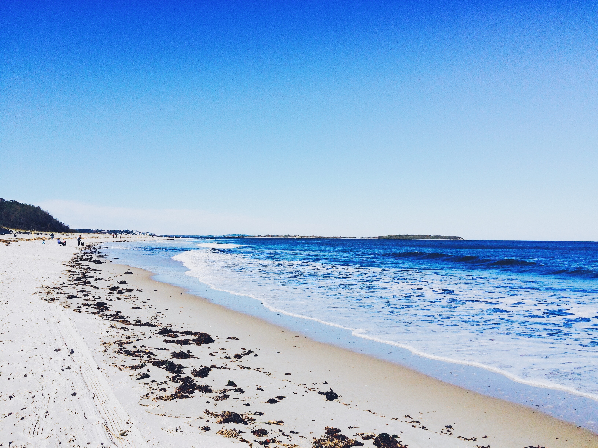
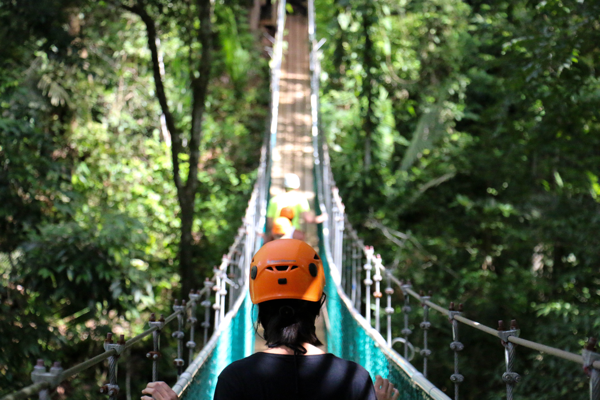
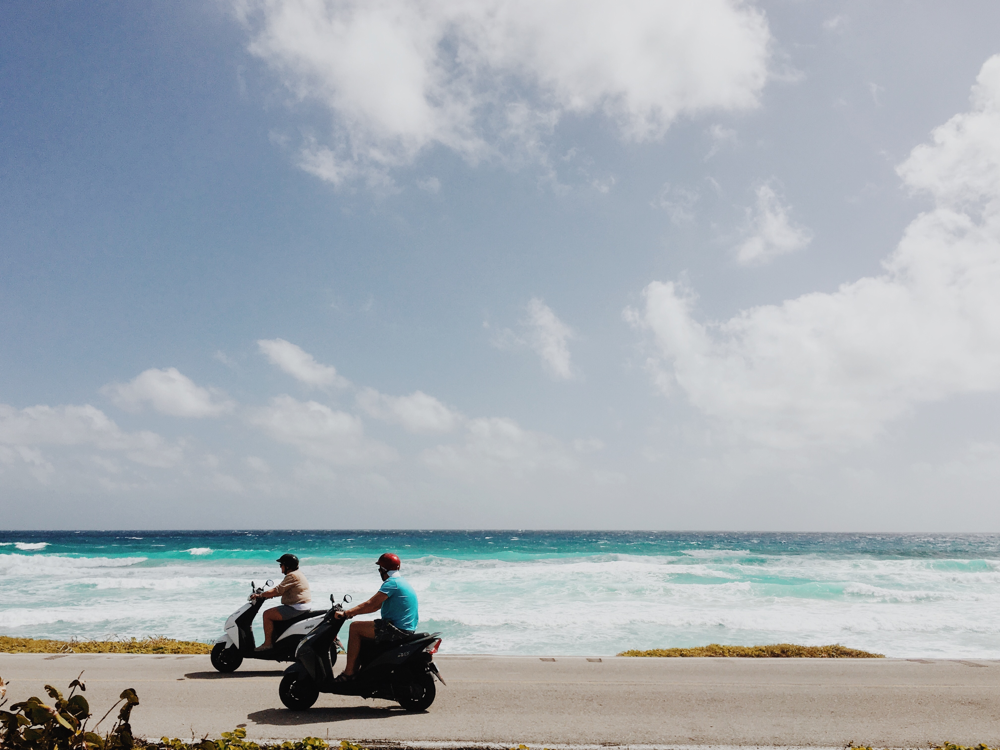

Background
Belize (/bəˈliːz/ (About this sound listen)) (Spanish: Belice) is a country located on the eastern coast of Central America. Belize is bordered on the northwest by Mexico, on the east by the Caribbean Sea, and on the south and west by Guatemala. It has an area of 22,800 square kilometres (8,800 sq mi) and a population of 387,879 (2017). Its mainland is about 290 km (180 mi) long and 110 km (68 mi) wide. It has the lowest population and population density in Central America. The country's population growth rate of 1.87% per year (2015) is the second highest in the region and one of the highest in the Western Hemisphere.
The Mayan civilization spread into the area of Belize between 1500 B.C. and 300 A.D. and flourished until about 1200. European exploration campaigns began in 1502 when Christopher Columbus sailed along the Gulf of Honduras. European settlement begun by English settlers in 1638, this period was also marked by Spain and Britain lay claim to the land until Britain defeated the Spanish in the Battle of St. George's Caye (1798). It became a British colony in 1840, known as British Honduras, and a Crown colony in 1862. Independence was achieved from the United Kingdom on 21 September 1981.
Belize has a diverse society, composed of many cultures and languages that reflect its rich history. English is the official language of Belize, while Belizean Creole is an unofficial native language. Over half the population is multilingual, with Spanish being the second most common spoken language. It is known for its September Celebrations, its extensive barrier reef coral reefs and punta music.
Belize's abundance of terrestrial and marine species and its diversity of ecosystems give it a key place in the globally significant Mesoamerican Biological Corridor. It is considered a Central American and Caribbean nation with strong ties to both the American and Caribbean regions. It is a member of the Caribbean Community (CARICOM), the Community of Latin American and Caribbean States (CELAC), and the Central American Integration System (SICA), the only country to hold full membership in all three regional organisations. Belize is a Commonwealth realm, with Queen Elizabeth II as its monarch and head of state.
Ambergris Caye
There is plenty to do in this 25 mile long island off the oast of northern Belize. Activities range from snorkling, the barrier reef, diving, to riding around on bicycles on the cobblestone streets.
Great Blue Hole
Known as one of the world's most distinguished scuba sites. Naturally created over 10,000 years ago after a cave roof crumbled in and now houses underwater tunnels, caverns, and rock formations. Ideal times to visit are in April and May.
Hol Chan Marine Reserve
Located on the southern part of Belize its name translates to "Little Channel." The barrier reef is known for its aquatic diversity has made it a hot spot for scuba divers and snorklers.
Packages
The best times to visit Belize is from late November through mid-April whichis the country's dry season.
